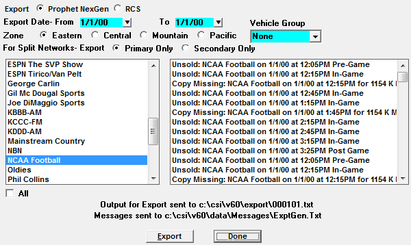
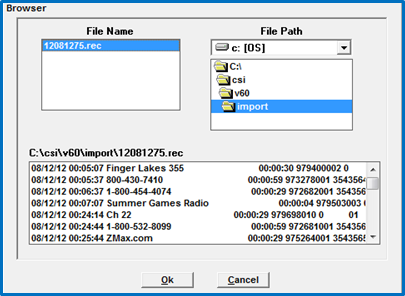
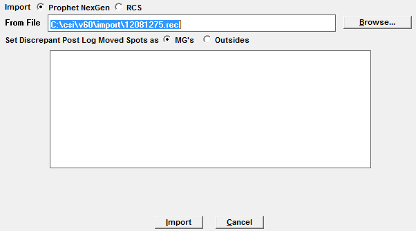
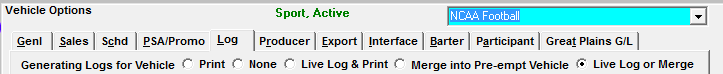
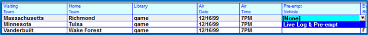
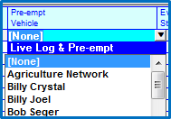
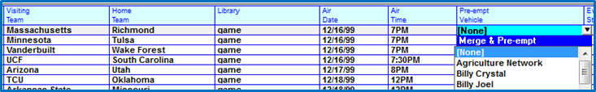

Sports Exports and Imports
You can export your event information to an automation system, Live Log, and/or the Counterpoint Affidavit System.
Automation Exports
To export your event information to an automation system click on the Task menu and select Automation.
Select the date and vehicle of the Event to be exported and click Export.

After the export is complete, any unsold inventory or spots missing copy will be listed in the right hand box. The export file can be found in your export folder: X:\CSI\Prod\Export.
Automation Imports
From the Task menu, select Import -> Automation.
Browse to the folder containing the automation import file. This is typically found in X:\CSI\Prod\Import. Select the correct file to be imported and click OK.

Indicate whether you want discrepant spots to be treated as Makegoods (MGs) or Outsides.
- Makegoods will be listed as such on the invoice/affidavit
- Outsides will not have attention drawn to them on the invoice/affidavit
Verify all information is correct, and click Import.

Results will appear in the white box when the import is finished.
Preemption Export Set Up
When an event is preempting another vehicle, you must indicate where the event’s log information will be exported by answering the “Generating Logs for Vehicle” setting in the List -> Vehicles -> Options -> Log tab.

- Print: Will allow the Sport Vehicle to print or PDF a log
- None: If None is selected, no log will be generated, however the log dates will advance, and the event will be able to be exported to an automation system. If you need the event to the Electronic Affidavit System, the event cannot be set to this option
- Live Log and Print: This option allows a log to be printed, and allows the vehicle to be reconciled through Live Log
- Merge into Pre-empt Vehicle:This option is used if an event is pre-empting another vehicle and you want the event’s spot information to merge onto the pre-empted vehicle’s log. This option is particularly useful if the event needs to be merged onto a 24 hour log for automation and reconciliation purposes
- Live Log or Merge:This option is used if an event is pre-empting another vehicle and you want the option of either merging the event information onto the pre-empted vehicle’s log to be reconciled via an automation system, OR exporting the event information to Live Log for reconciliation
Preempting Vehicles
If you are preempting vehicles to carry an event, you have the choice of merging the event onto the pre-empted vehicle’s log, or to send the event information to Live Log. Deciding which vehicle to pre-empt, and how to export and reconcile the event, is done in the Programming Event Schedule screen. When Pre-empting, Be sure multiple events are not pre-empting the same vehicle during overlapping hours.
Live Log & Pre-empt
This is used when the pre-empted vehicle is not live but the event is a live broadcast. Spot information will be sent to, and reconciled in Live Log.
Select the vehicle for which you need to create the pre-emption, and click Define Schedule. Find the event number line for which you need to create the pre-emption and click in the Pre-Empt Vehicle field. Select “Live Log & Pre-empt”.

Next, click the dropdown arrow to select the vehicle to pre-empt, and Tab.

Remember, this option will not merge the event’s spots onto any log.
Merge & Pre-empt
This feature is used when the conventional and sports vehicles are to be treated as one entity. For Merge & Pre-empt, the sports spot will be included with the pre-empted vehicle, on one seamless log. This is useful for automation systems.
Select the vehicle for which you need to create the pre-emption, and click Define Schedule. Find the event number line for which you need to create the pre-emption and click in the Pre-Empt Vehicle field. Toggle to “Merge & Pre-empt”.

Next, click the dropdown arrow to select the vehicle to pre-empt, and Tab.
Live Log Export
The Live Log module is updated every time a log is generated, or regenerated in Traffic. Remember, in order for any log changes to update in Live Log, you must regenerate the log in Traffic.
Counterpoint Affidavit Export and Import
Every time a log is generated or regenerated in Traffic, the Affiliate System automatically receives all of the spot information for an event. Once that information is received, the event’s log/affidavit can be exported to the Electronic Affidavit System. Event logs are generated one day at a time, and are exported the same way any other vehicles are exported, with the exception of those events that cross midnight. If an event crosses midnight, you must export two days’ worth of logs to the Counterpoint Affidavit System, the date the log begins and the date that crosses midnight.
Whenever affidavits are imported from the Counterpoint Affidavit System, all event spot information will also be imported and updated.